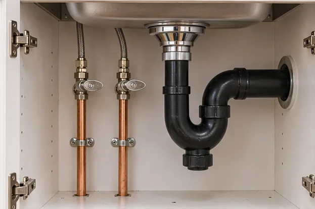
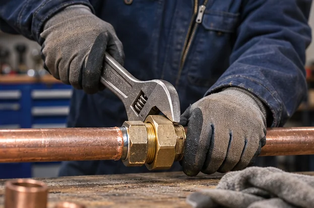
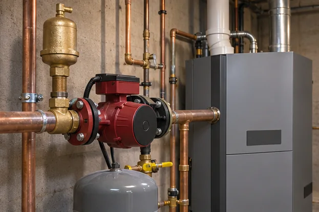

Residential plumbing
A leak in the cabinet, a dripping fixture or a pipe that keeps needing attention.
Residential service calls
Based in Simcoe, JVK handles everything from the pipes under a kitchen sink to the water lines serving a working facility.
Call the shop

A leak in the cabinet, a dripping fixture or a pipe that keeps needing attention.
Residential service calls
A sink that empties slowly, several fixtures backing up or a blockage that keeps returning.
Drain cleaning details
One cold zone or a whole building without heat? Start with the boiler and the water it circulates.
Hot water heating detailsFor service or project enquiries, have the property address handy. For a repair, tell us which fixtures or rooms are affected.